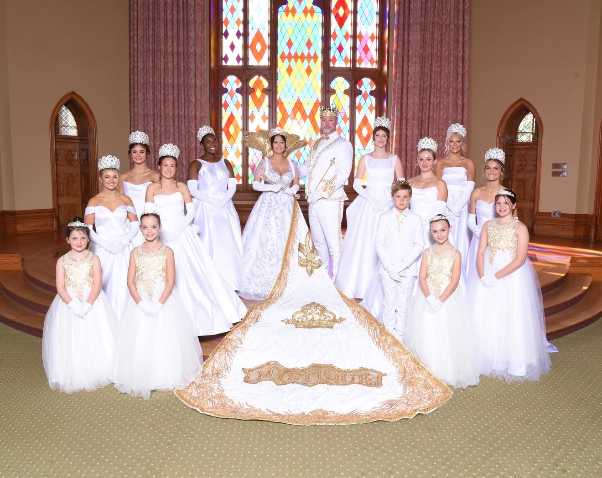

Royal Court
Introducing the 2026 Royal Court of Krewe Mystique
We are proud to present the 2026 Royal Court for Krewe Mystique de la Capitale. These esteemed members represent elegance, tradition, and the spirit of our krewe.

Court Elegance
The Krewe Mystique Royal Court embodies the grace, dignity, and pageantry that define our parade tradition. Each member has been carefully selected to represent our krewe's values and vision.
The court serves as the ceremonial heart of our krewe, leading our parade procession and engaging with the Baton Rouge community throughout the celebration season.
Community Pride
Our court is built on a strong foundation of community, tradition, and parading excellence that continues to grow every year. Members represent the diverse spirit of Baton Rouge.
The pageantry and presentation of our royal court reflects decades of tradition and our commitment to delivering a world-class parade experience.
Court Information
To learn more about our royal court presentation, venue details, or to inquire about court-related events, please contact us.